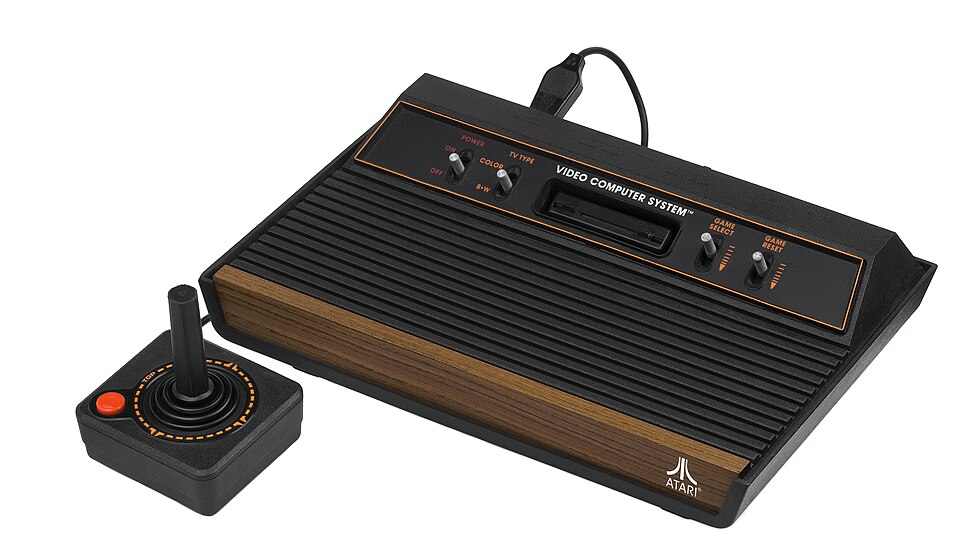
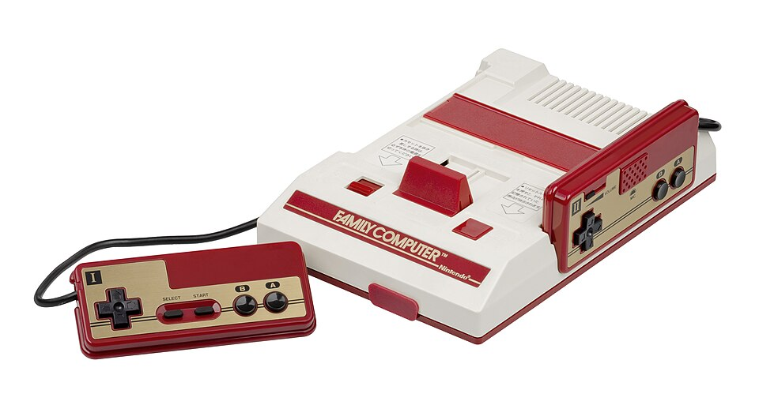
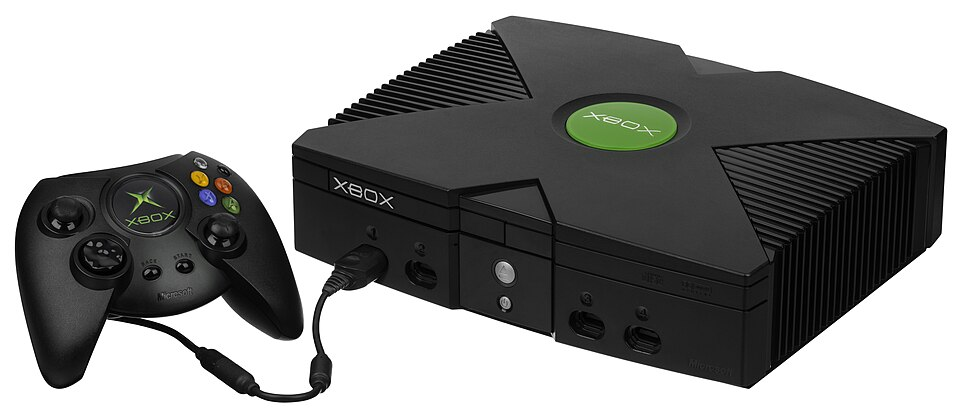

Pong
Atari spēlē divi spēlētāji atvaira bumbiņu ar ekrānā redzamām raketēm. Vienkāršā galda tenisa spēle kļuva par vienu no agrīnajiem videospēļu panākumiem.
Virtuālā izstāde / 1972–2017
Kādreiz pietika ar divām svītrām un bumbiņu uz ekrāna. Vēlāk spēles varēja paņemt līdzi kabatā un spēlēt kopā ar draugiem internetā. Iepazīsti astoņas pieturas šajā attīstības ceļā!
Apskatīt izstādi
Šīs izstādes mērķis ir parādīt, kā mainījās videospēles un ierīces, ar kurām tās spēlējam. Esam izvēlējušies vienu spēļu automātu un septiņas konsoles, kas palīdz iepazīt dažādus videospēļu vēstures posmus.
Galerija sākas ar Pong un turpinās ar mājas un pārnēsājamām konsolēm. Pievērs uzmanību tam, kā mainās ne tikai spēļu grafika, bet arī vadības pultis un pats spēlēšanas veids. Norādītie gadi ir spēles vai ierīces pirmās iznākšanas gadi; dažādos reģionos tie var atšķirties.
Pāriet uz piecu pieturu laika ceļojumuNo arkādes spēļu zāles līdz konsolei, kuru var paņemt līdzi.
Atari spēlē divi spēlētāji atvaira bumbiņu ar ekrānā redzamām raketēm. Vienkāršā galda tenisa spēle kļuva par vienu no agrīnajiem videospēļu panākumiem.

Sākotnēji šo konsoli sauca par Atari VCS. Maināmās kasetnes ļāva vienā ierīcē spēlēt dažādas spēles mājās pie televizora.

Famicom iznāca Japānā, bet vēlāk citos tirgos parādījās tās pārveidotā versija NES. Ar šo konsoļu saimi saistās arī Super Mario Bros. spēle.

Game Boy ļāva spēlēt bez televizora. Mazs ekrāns, pogas un maināmas spēļu kasetnes bija apvienotas vienā pārnēsājamā ierīcē.

Sony pirmā PlayStation iznāca Japānā 1994. gadā. Tā izmantoja CD diskus un palīdzēja trīsdimensiju spēļu pasaulēm kļūt ierastākām.

Ar pirmo Xbox Microsoft ienāca spēļu konsoļu tirgū. Konsole vispirms iznāca Ziemeļamerikā, un viena no tās pazīstamajām spēlēm bija Halo.

Wii spēlēs svarīgas kļuva arī spēlētāja kustības. Ar Wii Remote pulti varēja, piemēram, atdarināt tenisa raketes vēzienu.
Switch var izmantot gan pie televizora, gan kā pārnēsājamu konsoli. Noņemamās Joy-Con pultis piedāvā vairākus spēlēšanas veidus.
Piecas pieturas, kas parāda pārmaiņas spēļu ierīcēs un to vadībā.
Divi spēlētāji, divas raketes un viena bumbiņa.
Spēļu kasetnes un vadības pultis pie mājas televizora.
Spēlēšanai vairs nav vajadzīgs televizors.
Spēlētāja kustības kļūst par daļu no spēles vadības.
Viena konsole spēlēšanai gan mājās, gan ceļā.
Attēli iegūti no Wikimedia Commons. Saites ved uz oriģinālu aprakstiem.